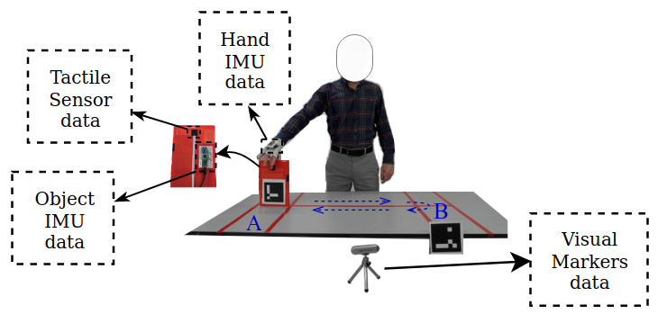

View on GitHub
View on GitHub
Abstract
Ensuring a stable grasp during manipulative movements is crucial for robotic applications. While grip force has been the primary means of slip control, our human study revealed that trajectory modulation is also an effective slip control policy during pick-and-place tasks. Motivated by these findings, we developed and compared a slip control policy based on trajectory modulation to one based on grip force control for robotic pick-and-place tasks. Our results show that trajectory modulation significantly outperforms grip force control in certain scenarios, highlighting its potential for slip control in robotics. Moreover, we demonstrate the importance of incorporating forward models in developing effective trajectory modulation slip control systems. Overall, our study provides insight into an alternative method for slip control and suggests that predictive control using a forward model offers a promising approach for improving robotic manipulation tasks, in particular for slip control using trajectory modulation.

The video below provides an in-depth look into the practical applications of our novel slip controller, showcasing its performance in real-world scenarios. We have included demonstrations that highlight the controller’s ability to maintain stability and control under varying conditions, which are critical for its intended use in dynamic environments. Additionally, the video presents key findings from our human subject study, where participants interacted with the system under controlled conditions. This study not only validates the effectiveness of our slip controller but also offers insights into its potential impact on enhancing human-robot interaction. Through these demonstrations, we aim to illustrate the robustness and versatility of our approach, paving the way for future advancements in this field.
See Research Photos
